Product Management — Create and Edit a Product
Add a product profile to QMAS so you can attach documents, compliance data, testing and eFiling to it.
Overview
- Open Product Management and click + New Product.
- Product Profile: fill in product details, then choose a supplier. Shipping information, factory and additional info are optional.
- Related Product (optional): link related products, then click Done.
- The product appears at the top of the Product Management list. Open it to see the product profile.
- To change it later, open the product, click ⋮ next to the name, then Edit product.
Step-by-step
1. Open Product Management
In the left menu, open Product Management. Click + New Product at the top right. To add many products at once, use Import Product.
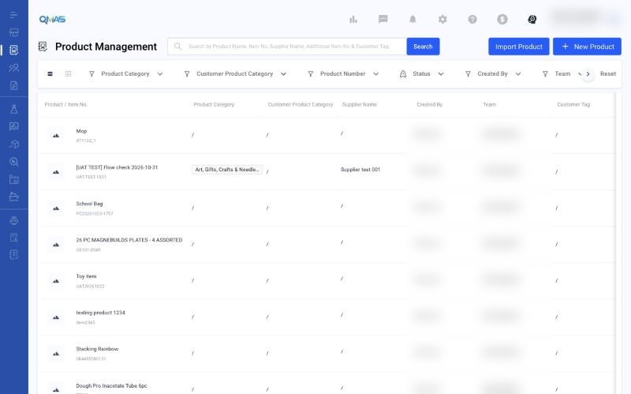
2. Product Profile — product details
The Add new product wizard opens. Under 1. Product Details, fill in:
- Item No. and Product Name (required).
- Long Descriptions (optional): purpose, materials and internal parts such as batteries or stuffing.
- Additional Item No. (optional).
- Product Category (QMAS): click Select Category.
- Customer Tag, Customer Product Category (Level 1–3) and Remark (optional).
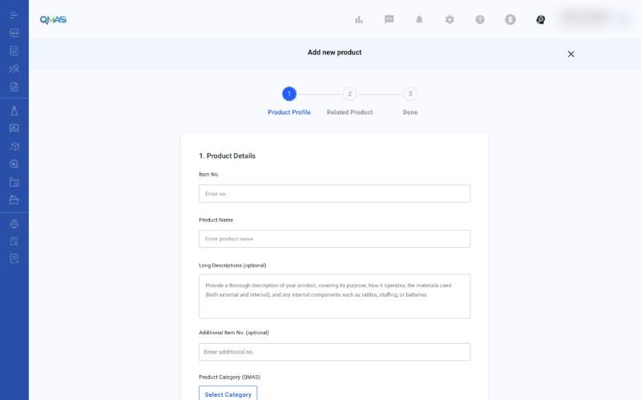
In Select Category, search by name (for example “drinkware”), click the category, then click Add category.
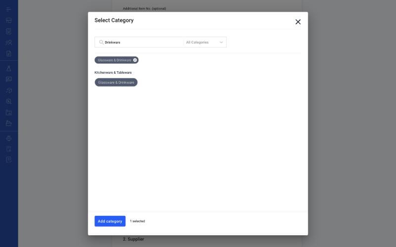
3. Product Profile — supplier
Under 2. Supplier, choose My supplier list and click Select supplier, or choose New supplier to add one here.
In the pop-up, click Select on one supplier, then Confirm.
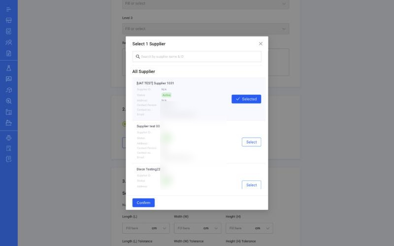
The supplier card appears. Use Change Supplier to pick another one, or Edit this profile to update the supplier.
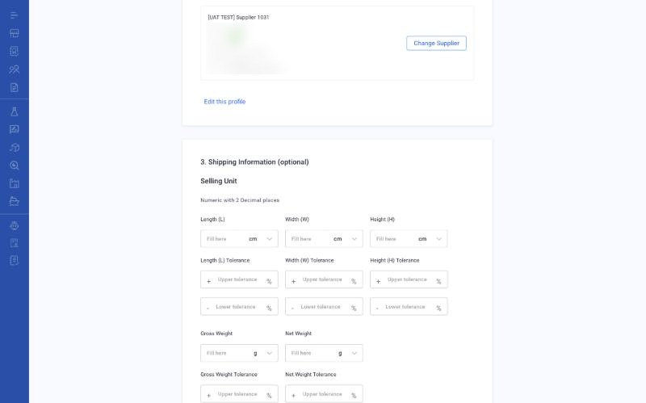
4. Product Profile — optional sections
- Shipping Information: size, weight, tolerance and barcode for the selling unit, inner carton and outer carton.
- Factory: click Select existing factory.
- Additional Info: choose a Buyer (or Add buyer) and upload up to 30 product photos (JPG, JPEG, PNG).
Click Next.
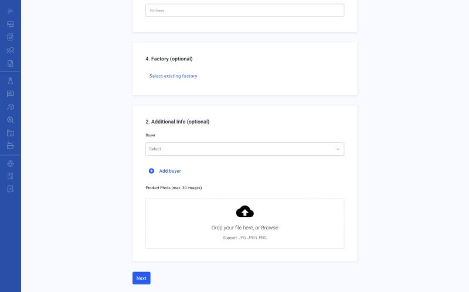
5. Related Product (optional)
Product linkage helps you manage compliance reports. For example, link a raw material or an assortment to several end products. Click Select related product, or skip this step. Click Done.
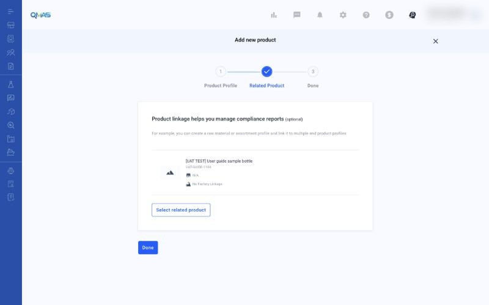
6. Done — find your product
QMAS shows “Product added” and returns to the Product Management list. The new product is at the top.
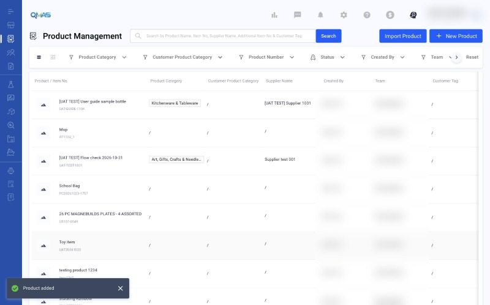
Click the product to open its profile. From the left menu of the profile you can manage Document, Shipping Detail, Compliance Data, Quality Requirement, AI Risk Screening, CPSC eFiling and Packaging Detail.
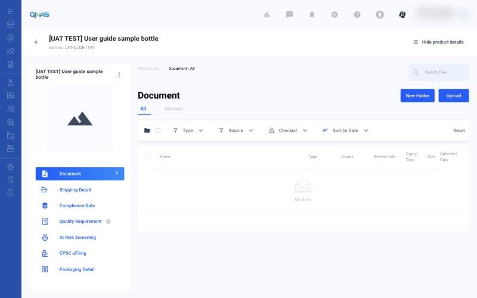
7. Edit, copy or deactivate a product
On the product profile, click ⋮ next to the product name:
| Option | What it does |
|---|---|
| Edit product | Opens the same wizard with your saved details. Change them, then click Next and Done. |
| Testing order | Starts a Product Testing order for this product. |
| Make a copy | Creates a new product with the same details. |
| Mark as inactive | Sets the product to inactive. |
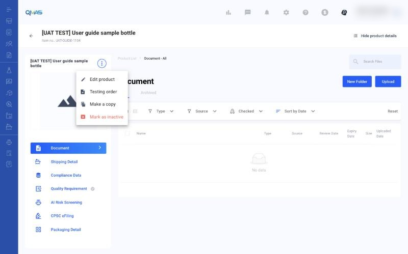
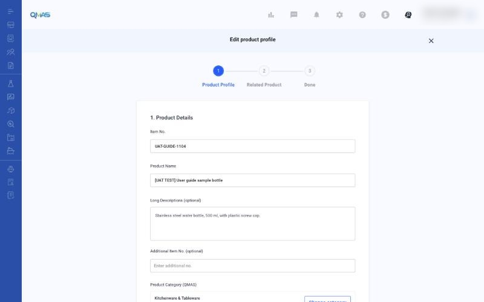
Tips
FAQ
- How do I create a new product in QMAS?
- Go to Product Management (https://qmas.icw.io/product/list), click + New Product, fill in Product Profile, then click Next and Done. Direct link: https://qmas.icw.io/add-product
- How do I edit a product?
- Open the product from the Product Management list, click ⋮ next to the product name, then Edit product.
- Can I add many products at once?
- Yes. Click Import Product on the Product Management list.
- Where do I submit eFiling or add compliance data for a product?
- Open the product profile and use CPSC eFiling or Compliance Data in its left menu.